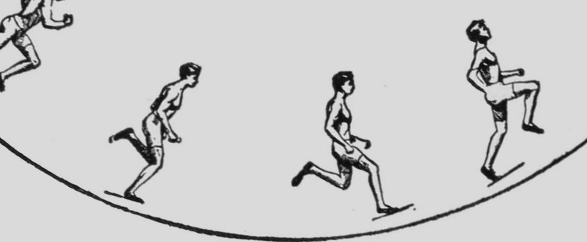
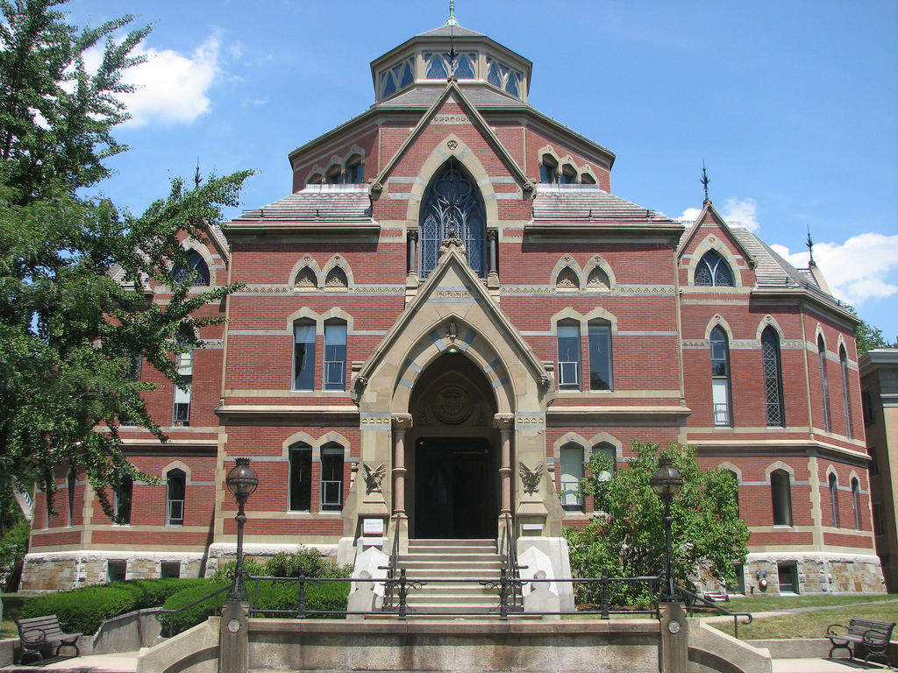
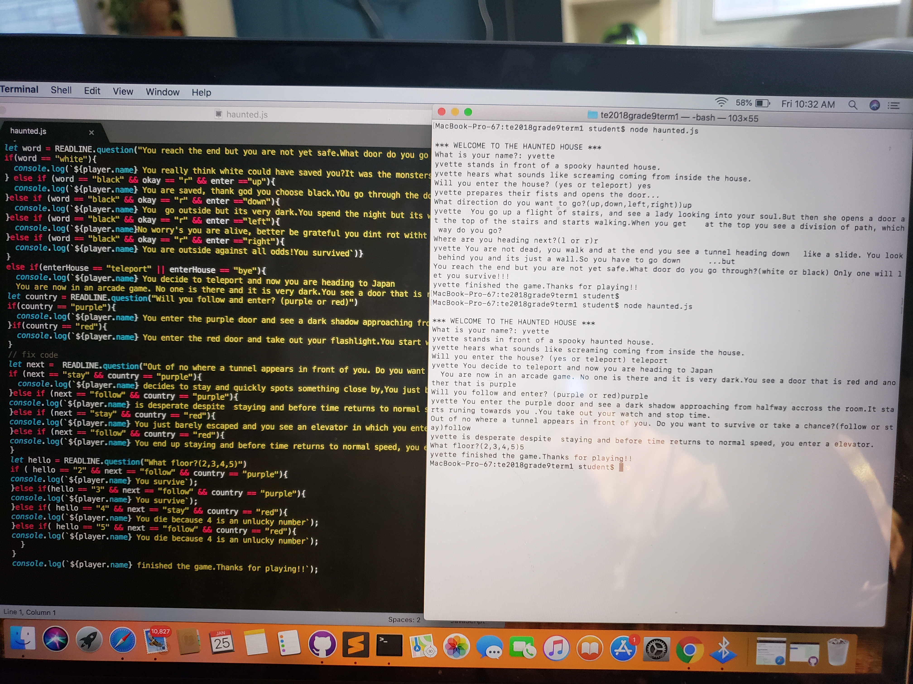

About Me
I'm fourteen years old and I've been living in the bronx for all my life.I come from a hispanic familly, specifcally from a Mexican one.I have dark hair and eyes, and my favorite color is blue.I've done track for at least 4 years,since I started in the third grade.It was the first year that they were emplacing that sport in my school and the minimun grade was third.I was a long distance runner and I did relay.My relay team went to the championships for two years in a row.This year I am joining swimming since I also enjoy doing that.I go to Bard highschool Early college in Manhattan and its a 2 year highschool and college.Its reallly hard but I like it.I got into the school throught a written test and an interview.The process was easy but staying and getting good grades is what is hard.I communite for an hour in a half,which isn't really that good for my liking.
Goals
I want to become a doctor when I'm older and go to Brown university.I hope to go medical school that is part of Brown University and i want to become a surgeon.Im not sure which one so by then i hope I have my life settled and figured out. I love travelling and I'm waiting to go to Mexico during the summer.I love visiting my family and since we live in the country side, i always go to the farm with my gradma.My grandma own a farm and i'm like her, in a way, that shows how we prefer going to the farm than the kitchen.Hopefully in the future throughout my school years, I can study abroad.I'm currently learning mandarin and hope to study hangul in the future.I wish to go to Korea or Japan, and learn a lot about other countries cultures
Projects
So far in Codeenxt we've been working on javascript and I manged to cover a few projects.One being the haunted house project, and a variety of other small challenges that amounted the skills needed for other projects like the bank.It's been preety challenging compared to other coding languages like html, but of cource there is still a lot left to learn.Currently we are workingn on this project, which is to design our own webpage.
Experience
Just recently I was able to partake in a project in which i paired up with someone and I was able to build a smll machine that taught itself.It had a camera which recorded movement and though it took a while to build,it was defintiely worth it.I have expereicne from over the past months of codenect,as well as that over the summer.I know javascript thought not everything and I'm learning html.
Contact information
You can contact me at my Email: yvette.rodriguez@csedge.org
- My Own Playlist
- The type of music i like